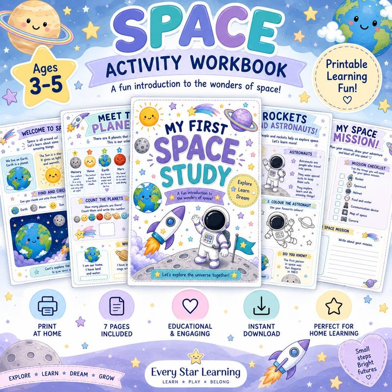
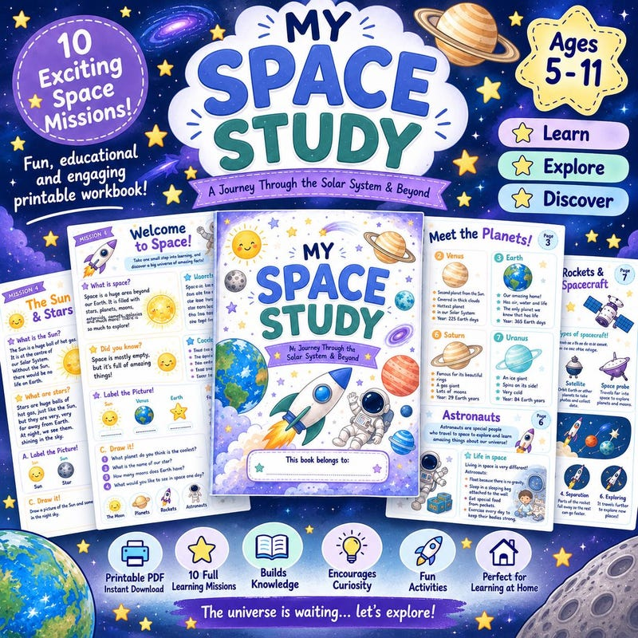

EVERY STAR LEARNING · DIGITAL DOWNLOADS
Space activity printables for kids
Follow their interest in planets, rockets and space. Choose from two downloadable workbooks with different suggested age ranges.
Choose your printableDownload through Etsy · Print at home · No physical item posted

Ages 3–5: My First Space Study
A seven-page A4 PDF, including front and back covers and five activity pages. The themes cover planets, the Sun, Moon and stars, rockets, astronauts and a creative space mission. Activities include counting, matching, patterns, colouring, drawing and early writing.
Ages 5–11: My Space Study
A 12-page PDF with front and back covers and ten learning missions. Explore the Solar System, planets, the Sun, stars, the Moon, astronauts and spacecraft through labelling, matching, true-or-false questions, drawing, quizzes and puzzles.
Making your workbook
Print at home or through a printing service. The listings suggest ordinary paper for activity pages and card covers for durability; staple or bind the pages together. The younger workbook is explicitly A4; the older listing does not specify a paper size.
These are separate downloads, not posted workbooks. The ages 3–5 listing permits reprinting for personal use. Check the individual Etsy listing for the terms that apply to the workbook you choose.
Start with a page that interests your child. The age ranges are a guide; there is no need to finish a workbook in one sitting.
Explore the printable kits
Prices shown were checked on Etsy on 26 November 2026. Confirm current prices, file details and usage terms on Etsy.
A few useful answers
Which age ranges are available?
There are separate space workbook listings for ages 3–5 and ages 5–11. Review the previews and contents before choosing.
Are these printed workbooks delivered by post?
No. These are digital downloads for you to print. No physical workbook is posted.
How do I get the files?
Purchase through the linked Etsy listing, then follow Etsy’s download instructions. For help downloading and printing, read our printable FAQs.